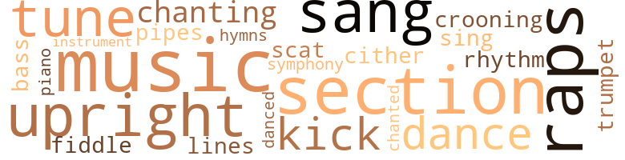

A Deity Nodded, by Millican, Arthenia Bates (1973)
44 music-related terms matched in this text.
Most frequent terms in this topic: music (5); section (4); upright (3); tune (3); sang (3)
bass.n.07
Definition: the member with the lowest range of a family of musical instruments
| word | sentence |
|---|---|
| bass | Who 's at the bass fiddle ? " |
cornet.n.01
Definition: a brass musical instrument with a brilliant tone; has a narrow tube and a flared bell and is played by means of valves
| word | sentence |
|---|---|
| trumpet | Afterward , she said that her son played a trumpet solo which touched every heart in Lynch Auditorium . |
croon.v.01
Definition: sing softly
| word | sentence |
|---|---|
| crooning | Heflin told Tisha that he caught Plump in the act of crooning along with King Cole while she was cook - ing one day . |
dance.n.01
Definition: an artistic form of nonverbal communication
| word | sentence |
|---|---|
| dance | Surely , one day all of the bones would come out to dance the dance of the remembered deaths of other days . |
dance.v.03
Definition: skip, leap, or move up and down or sideways
| word | sentence |
|---|---|
| dance | Surely , one day all of the bones would come out to dance the dance of the remembered deaths of other days . |
| danced | She picked the Wash - ington Post up and danced to her own jingle , chanting the tune of " The Way of The Cross Leads Home . " |
hymn.n.01
Definition: a song of praise (to God or to a saint or to a nation)
| word | sentence |
|---|---|
| hymns | She could hear his voice so clearly humming one of his favorite work hymns : " Chil - dren , Where , Where Is the Road That Leads on Home ? |
kick.v.04
Definition: kick a leg up
| word | sentence |
|---|---|
| kick | All I can say is I 'm glad he 's able to kick . |
| kick | Squire got up and walked around the room , intentionally for something to kick . |
music.n.01
Definition: an artistic form of auditory communication incorporating instrumental or vocal tones in a structured and continuous manner
| word | sentence |
|---|---|
| music | " Darhling , the music is heavenly ! |
| music | They assembled in the family room of the Kemp 's home to spend a few hours together , doing what Brownie liked best - listening to great music . |
| music | Let 's start the music , " Sahara said loud - ly , before anyone could respond to words she had thrown at Tisha . |
| music | " I 've told you that the higher look for our class in music lies in this direction . |
| music | The music for the dead , " Nearer My God to Thee , " would come from an unknown source in the room to lend some aura of mys - tery to the passing of the dear one . |
musical_instrument.n.01
Definition: any of various devices or contrivances that can be used to produce musical tones or sounds
| word | sentence |
|---|---|
| instrument | Flora had feared that she would stay awake or even cry as many of the neighbors ' children , but she took the train as her instrument of excitement . |
piano.n.01
Definition: a keyboard instrument that is played by depressing keys that cause hammers to strike tuned strings and produce sounds
| word | sentence |
|---|---|
| piano | There was an upright grand piano , a three-piece bedroom suite , a washstand , two rocking chairs , a davenport with sugar - starched crocheted pieces on the arm rests . |
pipe.n.04
Definition: a tubular wind instrument
| word | sentence |
|---|---|
| pipes | The grease got cold in the pipes . " |
rap.n.05
Definition: genre of African-American music of the 1980s and 1990s in which rhyming lyrics are chanted to a musical accompaniment; several forms of rap have emerged
| word | sentence |
|---|---|
| raps | You know the three raps of fate ? |
| raps | " Detroit , stop the record and begin it again , so that I can hear the three raps of fate . |
| Raps | " Raps of faith ? |
| raps | " You all ought to be ashamed of yourself talking about raps of faith and eating ice cream and cake all along . |
rhythm.n.04
Definition: the arrangement of spoken words alternating stressed and unstressed elements
| word | sentence |
|---|---|
| rhythm | But she felt that she still had rhythm in her bones . |
scat.n.01
Definition: singing jazz; the singer substitutes nonsense syllables for the words of the song and tries to sound like a musical instrument
| word | sentence |
|---|---|
| scat | One morning , to get her scat mate 's attention , Tisha jangled her charms . |
section.n.01
Definition: a self-contained part of a larger composition (written or musical)
| word | sentence |
|---|---|
| section | Ask her how many she want from this section and how many she want from your home . |
| section | She had no idea of how to get to Euclid Street where the Kemps lived , but she wanted to try to find the way , assuming that they were not too far apart , since both houses were in the North Western section of the city . |
| section | Do you know how to read the advertise - ment section in the newspaper ? |
| section | Well in that section you 'll find the help wanted items . |
sing.v.02
Definition: produce tones with the voice
| word | sentence |
|---|---|
| sang | A preaching woman shook her tamborine in their faces and sang in a monotone : " Rise , shine , and give God glory . |
| sing | She just remember - ed drinking it down as fast as she could ; she had a memory of setting the glass down three times before she was compel - led to sing . |
| sang | She sang , " When the Saints Go Marching in " in the Louis Armstrong manner . |
| sang | " I needs must go by the way of the ad , the way of the ad means work , " she sang and thumbed the pages of the Post . |
symphony.n.01
Definition: a long and complex sonata for symphony orchestra
| word | sentence |
|---|---|
| symphony | Monterey stood and rebuked her husband above the noise of the symphony . |
tone.v.01
Definition: utter monotonously and repetitively and rhythmically
| word | sentence |
|---|---|
| chanting | She picked the Wash - ington Post up and danced to her own jingle , chanting the tune of " The Way of The Cross Leads Home . " |
| chanted | There was a scowl on the angel 's face ; it chanted , " If your right eye offend thee , pluck it out . " |
| chanting | He jumped off the porch and ran around the house chanting ' fuddy-duddy , fuddy-duddy . ' |
tune.n.01
Definition: a succession of notes forming a distinctive sequence
| word | sentence |
|---|---|
| lines | Does it really matter to Him about lines , she thought . |
| tune | She picked the Wash - ington Post up and danced to her own jingle , chanting the tune of " The Way of The Cross Leads Home . " |
| tune | As she started her tune " fifty-four , fifty-four , fifty-four on the go , " Ludd came out to watch her shout . |
| tune | Heflin and Ludd had part-time jobs , but that did n't change the tune . |
upright.n.02
Definition: a piano with a vertical sounding board
| word | sentence |
|---|---|
| upright | She sat upright again . |
| upright | And somehow , she had not slept on his knees but upright in her seat . |
| upright | She bolted upright , listening for the kitchen sounds , but she could not hear them . |
violin.n.01
Definition: bowed stringed instrument that is the highest member of the violin family; this instrument has four strings and a hollow body and an unfretted fingerboard and is played with a bow
| word | sentence |
|---|---|
| fiddle | Who 's at the bass fiddle ? " |
zither.n.01
Definition: a musical stringed instrument with strings stretched over a flat sounding board; it is laid flat and played with a plectrum and with fingers
| word | sentence |
|---|---|
| cither | I do n't have a baby over there cither . |
90 violence-related terms matched in this text.
Most frequent terms in this topic: fighting (6); harm (6); hated (5); ball (5); fight (5)
abhor.v.01
Definition: find repugnant
| word | sentence |
|---|---|
| abhor | And she would not return until she was sure that she had found a way to a Master who could help her find a way of life that could prove more satisfactory than the life of Christianity - which she had learned to abhor through them who were so serious in intent - yet untoward in action . |
aggravation.n.01
Definition: an exasperated feeling of annoyance
| word | sentence |
|---|---|
| aggravation | Mrs. Ellis ' act was the basic point of the aggravation in her system . |
cannon.n.04
Definition: heavy automatic gun fired from an airplane
| word | sentence |
|---|---|
| cannon | She jumped as if a cannon ball had hit her . |
contemn.v.01
Definition: look down on with disdain
| word | sentence |
|---|---|
| scorned | " They say a woman has n't lived unless she 's been loved , envied and scorned . |
crucify.v.01
Definition: kill by nailing onto a cross
| word | sentence |
|---|---|
| crucified | You did n't mean to help me at all , but you 've helped me to decide that I must denounce the God who crucified His only Son , for being good . |
| crucified | God , the God of Mother Georgia , the God of her parents , the God who had let His only Son be crucified by wicked men , was uncaring . |
| crucified | The Saviour had done only good deeds and His Father had allowed Him to be crucified , so she did n't like recalling the matter at all . |
| crucified | She thought the wound opened in His side ( she was looking at the portrait of the crucified Savior above the choir stand ) and the blood poured down on the choir mem - bers who were dressed in white . |
cut.n.05
Definition: a wound made by cutting
| word | sentence |
|---|---|
| gash | Her heart sank as a short over-brown man with processed hair and a healed gash on his upper left cheek cast eyes of recognition on them . |
destroy.v.04
Definition: put (an animal) to death
| word | sentence |
|---|---|
| destroy | Your real mother ran out , but she did n't destroy you . |
draw.v.23
Definition: pull (a person) apart with four horses tied to his extremities, so as to execute him
| word | sentence |
|---|---|
| draw | Tisha nodded assent as her imagination worked to draw analogies between the righteous , the riotous and the gracious . |
drown.v.04
Definition: kill by submerging in water
| word | sentence |
|---|---|
| drowned | " That 's all right , but what I want to teach you is how to swim around in this vast universe - call it the world - or call it Washington , D.C. , without getting drowned . " |
fight.n.02
Definition: the act of fighting; any contest or struggle
| word | sentence |
|---|---|
| fighting | That 's my fighting piece . |
fight.n.05
Definition: a boxing or wrestling match
| word | sentence |
|---|---|
| fight | The students stood back , hoping to enjoy a good cat fight . |
| fight | She concluded that she could not have won her fight against the accusations that she had had an illicit love affair with Shot because she had no witness in her defense ; the gesture would have been taken as a means of saving themselves from the charge of having contributed to the delinquency of a minor . |
| fight | " Go on , " he told them , " and whilst you going , ask some - body who 's your Ma and Pa. " " Thank you , " Tisha took up the fight . |
| fights | She attend - ed the Sunday morning services to avoid constant fights with her parents . |
fight.v.02
Definition: fight against or resist strongly
| word | sentence |
|---|---|
| fighting | Just talk it over the fence and at the missionary meeting or whatever you in that you aim to get a baby at the offnage and that your old man is fussing and fighting with you everyday to keep a baby with strange blood out his house . " |
| fighting | If it is a girl though , you can start saying that after all that fussing and fighting , you got your old man to see your way . " |
| fought | A pair of deep - set greenish-gray eyes blinked wide , and pink bouteed feet fought the air . |
| fighting | Big Sister was fighting mad . |
| fight | You see , Miss Dees , I do n't like dirt - so I do n't need a person who 's too weak to fight it . |
| fight | Anyway , she had the note on Mrs. Eddy to fight with . |
| fought | To her the gift said - if she fought hard enough to enter Detroit 's world , she would always be hungry at the doorstep of middle class society . |
| fighting | The greenish-gray eyes were fixed on his face and the feet were fighting the blanket . |
| fighting | They did n't know if I was fighting for you or for myself , but I broke up the jabbeering , just the same . |
| fought | He fought to stay awake so that they could talk the question out . |
gag.v.06
Definition: cause to retch or choke
| word | sentence |
|---|---|
| choked | I got aholt to his tie and choked him . |
| choked | Tisha choked on the name . |
hate.n.01
Definition: the emotion of intense dislike; a feeling of dislike so strong that it demands action
| word | sentence |
|---|---|
| hate | I ca n't see how a religion of hate is going to help the race . |
hate.v.01
Definition: dislike intensely; feel antipathy or aversion towards
| word | sentence |
|---|---|
| hating | Then she said something about hating to see you involved or some - thing like that , because you 're so young . " |
| hate | " You 're right , but I do n't want you to be because we got the four head on the way to being something and I 'd hate for her to be mint since she 's not really our blood . |
| hating | " You what , " he snapped , hating the intrusion on his vision of the city . |
| hated | Tisha hated to see the jar sitting there after she had cleaned the dishes , but there it stood . |
| hated | What she hated most , though was Ilene 's sister Nola 's constant interference in the way she cared for Rodney . |
| hated | She knew that Shot 's mother hated her . |
| hated | He said that he could under - stand but that he hated to see her lose the chance of a life - time because of a broken finger and half-made plans to attend school . |
| hating | " The preacher said at church one Sunday , that this is a Christian country - and you all are wrong to go against the country and go against white people - hating them at that . " |
| hate | " We do n't hate anybody , Mama . |
| detested | When everything went all right on the playground , Major was not bothered by his nickname , but when trouble came , he detested his nick - name and the children who teased him . |
| hated | She told them how she hated to hear the preacher describe so carefully how they pierced the Lord 's Son in His side when He had n't done anything to be treated that way . |
injury.n.01
Definition: any physical damage to the body caused by violence or accident or fracture etc.
| word | sentence |
|---|---|
| harm | " Tell Squire , " her inner voice commanded her , but instead , she decided to ignore the idea because no harm could come to Tisha . |
| harm | If I tell her before you , she may do another harm . |
| harm | I do n't mean any harm , Detroit , but I do n't think I give a hoot about society . " |
| harm | No harm , girlie , but you just do n't measure up . |
| harm | It was the cheapest way to bring , maybe , lasting harm to the enemy . |
| harm | " I do n't mean any harm , Pa Dees . |
kick.v.04
Definition: kick a leg up
| word | sentence |
|---|---|
| kick | All I can say is I 'm glad he 's able to kick . |
| kick | Squire got up and walked around the room , intentionally for something to kick . |
kick_back.v.02
Definition: spring back, as from a forceful thrust
| word | sentence |
|---|---|
| kick | I 'm supposed to be getting you away from them because they ca n't stand your guts , then you kick me . |
| kicks | He 's been set up only a couple of weeks so we plan to give him all the business we can - you know - girls and boys fun and privacy and the regular kicks . |
| kicked | " I see , " Tisha answered , and kicked the diapers aside to show Detroit that she did not relish her job . |
| kicked | Doe kicked her shoes off . |
| kicked | Heflin kicked Tisha 's foot several times , but Tisha would not open her mouth . |
kill.v.10
Definition: cause the death of, without intention
| word | sentence |
|---|---|
| kill | Boy you 'd kill me . |
| killed | Somebody else says he was gaming - you know , with cards , and won honest , but it was too much money they lost - so they hauled off and killed him on the spot . |
| killed | Some say the law killed him because he had got in a racket . |
| killed | You killed your own baby . |
knife.n.02
Definition: a weapon with a handle and blade with a sharp point
| word | sentence |
|---|---|
| knife | When she reached the kitchen on the fourth trip around she saw the carving knife on the sink . |
| knife | She slipped the carving knife in the laundry bag and went on to the basement to wash Rodney 's clothes . |
| knife | She carried it to the kitchen and cut the rope with a paring knife . |
molest.v.01
Definition: harass or assault sexually; make indecent advances to
| word | sentence |
|---|---|
| molested | She had been subdued in this case , however , without feeling that she had been molested . |
murder.n.01
Definition: unlawful premeditated killing of a human being by a human being
| word | sentence |
|---|---|
| murder | I know that God , the Father didnt ' care to save Him when those terrible people tried to murder Him . |
musket_ball.n.01
Definition: a solid projectile that is shot by a musket
| word | sentence |
|---|---|
| balls | " No , but I can make eatwell sardines into salmon balls . " |
| ball | She jumped as if a cannon ball had hit her . |
| ball | Listen , they 're having a ball down there . |
| ball | The majority of the women twisted the top of their stockings and held them up just below the knee with a ball . |
| ball | They do n't have enough of anything on the ball to make it . " |
| ball | She had said she would be curt , but instead , she was gushing - asking her about the sorority , the foot - ball schedule , the cake and ice cream . |
pain.v.02
Definition: cause emotional anguish or make miserable
| word | sentence |
|---|---|
| hurt | He told her what she had already guessed - that he was hurt because she had not invited him to the Prom . |
| hurt | You 'll hurt yourself crying that way . |
| hurt | A little tint for them green eyes would n't hurt . |
pistol.n.01
Definition: a firearm that is held and fired with one hand
| word | sentence |
|---|---|
| pistol | Before you go to sleep , I 'll show you where the pistol is . |
| pistol | Some mother-in - laws went so far as to use the ten-cent pistol that irrate wives used to deter their rivals . |
punch.n.01
Definition: (boxing) a blow with the fist
| word | sentence |
|---|---|
| punch | " Let me get the thermos out of the other bag with the punch . " |
| punch | She let him pour the punch in the cap which they sipped alternately . |
| punch | She would have to do with intelligent sandwiches and lovely punch served on a special occasion , but on the ordinary days , the invitation to a regu - lar meal would be denied . |
raid.v.01
Definition: search without warning, make a sudden surprise attack on
| word | sentence |
|---|---|
| raided | The first night in New York , Monkey Dust took us to Harlem to celebrate and they raided the place . |
rape.n.03
Definition: the crime of forcing a woman to submit to sexual intercourse against her will
| word | sentence |
|---|---|
| assault | Doe was pleased because she said her Daddy was out of the hospital and would be staying at her place until he had fully recovered from the assault . |
| assault | She braced herself for some assault . |
riot.n.01
Definition: a public act of violence by an unruly mob
| word | sentence |
|---|---|
| riot | It 's enough to send the cops here knocking on the door to see if we 're having a riot . " |
| riot | " This was to be a family dinner on the eve of our Lord 's birth , but instead , it 's a riot . |
scuffle.v.02
Definition: fight or struggle in a confused way at close quarters
| word | sentence |
|---|---|
| tussle | She decided that if he failed to believe her , she would tussle with him and if necessary , call for help . |
shoot.v.02
Definition: kill by firing a missile
| word | sentence |
|---|---|
| shot | Not just that either so much as she got the Amateur Photographer 's Award for that oak tree that was busted by lightning , but she knows that mine was the best because I shot something decent . |
strangle.v.01
Definition: kill by squeezing the throat of so as to cut off the air
| word | sentence |
|---|---|
| strangle | She started to run up the stairs to call out of the back win - dow to the policeman 's cottage but she feared that he might strangle her to keep her from screaming and then drag her off to the bedroom . |
whiplash.n.01
Definition: an injury to the neck (the cervical vertebrae) resulting from rapid acceleration or deceleration (as in an automobile accident)
| word | sentence |
|---|---|
| whiplash | That 's what they teach you at school - run away to save your fanny from the whiplash ? |
wound.n.01
Definition: an injury to living tissue (especially an injury involving a cut or break in the skin)
| word | sentence |
|---|---|
| wounds | His kind voice , restrained and pitched in a key of steady monotony , lathed the open wounds of her spirit . |
| wound | She thought the wound opened in His side ( she was looking at the portrait of the crucified Savior above the choir stand ) and the blood poured down on the choir mem - bers who were dressed in white . |
| wounds | Some people are more like Thomas ; he had to feel the wounds before he believed Christ , but I do n't see you in that light . " |
wrath.n.01
Definition: intense anger (usually on an epic scale)
| word | sentence |
|---|---|
| wrath | Unless you change , daughter , the wrath of God is bound to strike you low . " |
251 religion-related terms matched in this text.
Most frequent terms in this topic: God (61); church (38); Allah (21); religion (19); Christ (10)
allah.n.01
Definition: Muslim name for the one and only God
| word | sentence |
|---|---|
| Allah | PART FOUR " A SAFE HYPOTHESIS " SUBMISSION TO THE WILL OF ALLAH FOR SUCCOR IN AN UNBLESSED UNIVERSE As we near the exhaustion of wisdom of this world which has not been able to shed enough light on our path in search for that Supreme Wisdom to keep us from stumbling and falling , we now seek the wisdom of Allah . |
| Allah | ... - Mr. Elijah Muhammad Messenger of Allah THE WORLD OF THE UNION STATION IN WASH - ington , D.C. , was vast enough and busy enough to remind Tisha of the hours she had spent with Shot in the Grand Central Station . |
| Allah | She read a caption : " By Elijah Muhammad - Messenger of Allah . " |
| Allah | I really wanted to know if your pastor is the Messenger of Allah I read in a newspaper . " |
| Allah | " It is the Will of Allah , child , for you to seek the truth . |
| Allah | As a so-called Negro , you are one of the lost-found mem - bers of the Aboriginal people of earth ; you need to join the Nation of Islam so that Allah might reclaim you as his own . " |
| Allah | The message was plain : Submit to Allah , before it is too late . |
| Allah | This is prom - ised to you by Allah in the Person of Master W. F. Muhammad . |
| Allah | Allah has never failed to fulfill his promise . |
| Allah | Every black man and woman in the Western Hemis - phere reunite with me under the Cresent of Allah and rid ourselves of such evil practices on us by the white race of devils who are merciless and heartless when it comes to us . |
| Allah | The call to seekers of the Truth brought a number of persons to the altar who wished to pledge loyalty to the Nation of Islam , and submit them - selves to the will of Allah . |
| Allah | She , too , joined the Nation of Islam to unite with the others of her kind under the Star and Cresent of Allah in order to know freedom , justice , and equality . |
| Allah | Maybe they will come here to learn a new way of life and submit themselves to the will of Allah . " |
| Allah | Tisha started to let the argument rest , but she felt that she would be a shameful volunteer for Allah if she let this occasion pass without sharing an idea of his worth . |
| Allah | " I 'm serving Allah , " she persisted , " and I hope to serve Him better . |
| Allah | She pulled the mink closer to her ears as she faced the cold crisp air on the walk back to her parents ' home down Front Street , happy in the thought that she had learned to praise Allah who cared for His black children enough to help them find heaven on earth . |
| Allah | " Mrs. Henry , the more I listen to you , the more I think how good it would be for you to submit to Allah . " |
| Allah | What else can this Allah do ? |
| Allah | " You need to be in a place where you can serve Allah ! " |
| Allah | You know as well as I do , that I can not disobey Allah by eating forbidden foods . " |
| Allah | I 've found the true God , Allah . " |
baptist.n.01
Definition: follower of Baptistic doctrines
| word | sentence |
|---|---|
| Baptist | I guess I 'm a Baptist because my people are Baptist . " |
| Baptist | I guess I 'm a Baptist because my people are Baptist . " |
baptize.v.01
Definition: administer baptism to
| word | sentence |
|---|---|
| baptized | Heflin joined the church and was baptized when he was nine years old . |
| baptized | They were baptized the same night and afterwards became inseparable friends . |
blessing.n.05
Definition: the act of praying for divine protection
| word | sentence |
|---|---|
| blessing | The coat was a blessing or a curse . |
| blessing | She craved for a blessing that would not come into her life . |
| blessings | Benton Howe had said that he was a Muslim , too , but she had taken for granted , despite the odd blessings that her employers said , that they were just another de - nomination . |
| blessing | That night , Reva and Keith were put to bed early so when she came downstairs , the Edmunds were standing with their hands raised in the ritual of their blessing . |
| blessing | " Ready for the blessing ? " |
| blessing | We could take time for that , before the blessing . " |
christendom.n.01
Definition: the collective body of Christians throughout the world and history (found predominantly in Europe and the Americas and Australia)
| word | sentence |
|---|---|
| Christianity | His mission was to explain the truth of Christianity because she needed to be converted . |
christian.n.01
Definition: a religious person who believes Jesus is the Christ and who is a member of a Christian denomination
| word | sentence |
|---|---|
| Christian | At least the God of the Christian Scientists possessed a Mind , one attribute of the human being more distinguish - able than Pure Spirit . |
| Christian | What you 're telling me is that you do n't care to become affiliated with the Christian Scientists . |
| Christian | It 's too late now for me to become a Christian . |
| Christian | I do n't ever want you to darken my door again , unless you are a Christian . " |
church.n.02
Definition: a place for public (especially Christian) worship
| word | sentence |
|---|---|
| church | She declared that she would give one-tenth of her earnings to the church . |
| church | Tisha paid her one-tenth to the church as she had promised and to Flora 's belief , found peace in her soul with the sacrifice . |
| church | Flora nourished a con - stant belief that one day , any day - she would join the church . |
| church | TISHA PASSED TO ELEVENTH GRADE WITHOUT having joined the church and without having asked per - mission to take company . |
| church | It was the custom for the young man to call on Wednesday evening and to escort the young lady to church on Sunday night . |
| church | This gave him the chance to attend his church during the morning . |
| church | I do n't talk to any fellows but the ones who go to school and church . " |
| church | The mistress being ill , sent the house girl to church to serve in her stead . |
| church | '' Monterey , I 'd rather hear Mahalia to put me in the mood for church tomororw . " |
| church | " You mean the lady who had the real cake at church on family night ? " |
| church | " That is important Kyle , but I was just telling you that you 'd better not say anything to Tisha about Brother Ben - ton 's probing because we were not sure about her connec - tions with the church . " |
| church | She had a church wedding last August . |
| church | We kin as cousins , but I been a mother to her and to y' all before I come a Mother to the church . |
| church | Glancing around the wall , she found the pictures of undertakers , ministers , church groups , family members , movie stars and flowers . |
| church | And she had had to exclude herself from discussions on morality at the church so that she would n't be put on the spot by some smart alec who would relish throwing Tisha 's deeds in her face . |
| church | All I want now is for you to pack up your suitcase and leave by the time we get back from church . |
| church | " You did n't go to church on Christmas Day , Pa Dees ? " |
| church | " They shout in the church girl , and nobody do n't think nobody 's crazy . " |
| church | People shout when they want to in the church . " |
| church | We 're trying to send you to church and school to make something out of you , and you come here bringing that tit - ter-tatter . " |
| church | " Pa Dees , " Tisha hunched the old man , " we say in church ah , this is a mean old world not a white old world . " |
| church | " See all those white people coming out of church . " |
| church | " What 's so exciting about people coming out of church , Tish . " |
| church | " It 's a white church , baby . " |
| church | " You do n't expect nobody but colored people to come out of our church , because it 's a colored church . |
| church | But the problem at the root of Tisha 's excitement came to the surface of her mind whenever she envisioned the throng of white people leaving a church where they un - doubtedly went to serve God just as Negroes did . |
| church | " I hear they have trouble with you about church . |
| church | Heflin joined the church and was baptized when he was nine years old . |
| church | Her standard description for everything at the church was stupid , especially the serious readings that the larger girls enjoyed crying through . |
| church | She recalled how she screamed out once in church be - cause the preacher kept talking about the " blood " He shed for us . |
church.n.04
Definition: the body of people who attend or belong to a particular local church
| word | sentence |
|---|---|
| church | The question she asked Plump when she first attended church popped up in her mind . |
| church | " Not changing the subject , Honey , " Monterey said , " but I knew some people at our church from down South . |
| Church | She had been made Mother of Chute Bay Memorial Baptist Church which had been built by the people in the Bay on a pay-as-you-go basis during the depression years . |
| church | " The preacher said at church one Sunday , that this is a Christian country - and you all are wrong to go against the country and go against white people - hating them at that . " |
| church | " If you want to shout too bad , Tish , why do n't you shout in the church ? |
| church | " You do n't expect nobody but colored people to come out of our church , because it 's a colored church . |
| church | " Remember we saw those white people coming out of church ? ' |
| church | " We had to talk to you , daughter , " Squire said , " because the people at church are talking . |
church_service.n.01
Definition: a service conducted in a house of worship
| word | sentence |
|---|---|
| church | Tisha should have been going with the children since you weaned her from the bottle , but no , you huddled her up in the seat with you so she could sleep through the church services . |
cult.n.03
Definition: followers of an unorthodox, extremist, or false religion or sect who often live outside of conventional society under the direction of a charismatic leader
| word | sentence |
|---|---|
| cult | From Mrs. Stokes ' denunciation of the group as a cult , she guessed that it must be vastly different from all other denominations . |
curate.n.01
Definition: a person authorized to conduct religious worship
| word | sentence |
|---|---|
| pastor | I really wanted to know if your pastor is the Messenger of Allah I read in a newspaper . " |
doctrine.n.01
Definition: a belief (or system of beliefs) accepted as authoritative by some group or school
| word | sentence |
|---|---|
| doctrine | Just listen to some of this doctrine : ' Since we ca n't get along with the white man , we should be completely separated from him in a state or terri - tory of our own . ' |
doctrine_of_analogy.n.01
Definition: the religious belief that between creature and creator no similarity can be found so great but that the dissimilarity is always greater; any analogy between God and humans will always be inadequate
| word | sentence |
|---|---|
| analogies | Tisha nodded assent as her imagination worked to draw analogies between the righteous , the riotous and the gracious . |
eden.n.01
Definition: any place of complete bliss and delight and peace
| word | sentence |
|---|---|
| heaven | She would go out into the world once more to try to find a way , a pattern for her life , suitable employment and maybe , she thought , a God who would open His door to heaven , not shut it tight in her face no sooner than the invitation was given to enter . |
| heaven | Do you think you deserve heaven after 400 years of toil , sweat and blood along with being deprived of equal justice . . . . |
| heaven | So , go slow , be patient , and for heaven 's sake , show some enthusiasm for whatever Plump is involved in . |
| heaven | " He helps us to have heaven right here on earth and that 's what I want , for I can enjoy life every day of my life . " |
| heaven | She pulled the mink closer to her ears as she faced the cold crisp air on the walk back to her parents ' home down Front Street , happy in the thought that she had learned to praise Allah who cared for His black children enough to help them find heaven on earth . |
| heavens | Flora could not hear the words of the morning prayers : " Surely I have turn - ed myself being upright to Him who originated the heavens and the earth , " but she knew that whatever Tisha was doing had something to do with that new strange religion that was the source of disturbance in their lives . |
god.n.03
Definition: a man of such superior qualities that he seems like a deity to other people
| word | sentence |
|---|---|
| God | " Tisha , for God 's sake , " Heflin said and left the table without being excused . |
| God | A preaching woman shook her tamborine in their faces and sang in a monotone : " Rise , shine , and give God glory . |
| God | He said something about a cousin from home coming up , but I swear to God he did n't say a thing about a wife . " |
| God | Do n't get messed up with that unholy drinking - you know , mixing up a lot of stuff , and for God 's sake , do n't say you do n't drink . |
| God | Her oldest brother at home who had been taught to live right and to worship God had never had anything but sweetning-water suits during his school days . |
| God | " Where is God ? " |
| God | Thank God she 's got her own little bed . |
| God | Moreover , she was pleased to know that Mind was stressed in relationship to God . |
| God | At least the God of the Christian Scientists possessed a Mind , one attribute of the human being more distinguish - able than Pure Spirit . |
| God | Like Lil ' Miss Woman says to the monkey , ' when God made Adam he did n't lose the pattern . ' |
| God | But when I found out that God is the only reality , that He is infinite and good - I was cured of my emotional illness . |
| God | We can sense evil because we are human , but our teaching denies that evil in any form is real to God or to Spiritual Sense . " |
| God | " The preacher at home said that the Devil is evil and that he 's real - that God made the Devil so I ca n't see why He does n't know any - thing about evil . |
| God | What I want to tell you as your mother , is for you to admit that you sinned before God and man . |
| God | But as God is my Sacred Judge , I ca n't say you 're right . |
| God | Some little local preacher who served as a stop gap for embarrassment for the unwary - probably stumbled over a few verses from the Bible and then - because he might not have seen or heard of the deceased , tell the living about their wicked ways , and their need to turn to God be - fore the grim reaper marked them for the prey . |
| God | The music for the dead , " Nearer My God to Thee , " would come from an unknown source in the room to lend some aura of mys - tery to the passing of the dear one . |
| God | You did n't mean to help me at all , but you 've helped me to decide that I must denounce the God who crucified His only Son , for being good . |
| God | " If God be for you , who can be against you , " she could hear Pa Dees ' voice in her ear . |
| God | She had not found a pattern that yielded meaning , nor the God of her fathers , nor had she seen a vision of the light to come . |
| God | She would go out into the world once more to try to find a way , a pattern for her life , suitable employment and maybe , she thought , a God who would open His door to heaven , not shut it tight in her face no sooner than the invitation was given to enter . |
| God | She pulled the sweater up around her neck , and hearing the hum of the approaching bus at the same moment said , " Thank God . |
| God | You know they 're trying to do what God has n't done yet ! " |
| God | Therefore , the law of nature will not let us make God something other than man . " |
| God | The Messenger , whoever he might be , had with his professed belief that God is a man , secured her indistinct hope as firmly as a mariner secures his vessel by fastening it with cables and anchors or with lines . |
| God | " But thang God . |
| God | " Flora , for God 's sake come on in here and eat your break - fast . |
| God | She wor - ried plumb stiff ' bout that God 've yours just like she ca n't put you back in your place . |
| God | " Allah , Mother Georgia , is the true God . |
| God | " What I 'm telling you - that is what Mother Georgia , ambassador to Christ , is telling you , is that ai n't no God you found up the road . |
| God | Your Ma learned you ' bout the right God from your cradle and it ought to be good enough to take you to your grave . |
| God | You 're sick it 's true , but you are bucking the Will of God and stretching details while you think you can get by with it . " |
| God | That Allie you heard tell of way out yon - der , is just a make-shift God the crowd harkning after . |
| God | You better turn to the true and living God ' fore it 's a day and hour and eternity too late . " |
| God | And when you go back up the road , you 'll remember what God has done for me , and you 'll forget about that Allie and the Mooselims . |
| God | God , the God of Mother Georgia , the God of her parents , the God who had let His only Son be crucified by wicked men , was uncaring . |
| God | God , the God of Mother Georgia , the God of her parents , the God who had let His only Son be crucified by wicked men , was uncaring . |
| God | God , the God of Mother Georgia , the God of her parents , the God who had let His only Son be crucified by wicked men , was uncaring . |
| God | " Who in God 's name is that , sister ? " |
| God | " The true God for the black man . |
| God | The Master , the same God who had helped her to fulfill her longing for motherhood in Tisha , would help her to make the right decision in regards to the stand she must take to restore peace to her household . |
| God | She could not tell afterward if she had dozed off or not , but the angel of Christmas came to her , but did not be - gin the " Fear not , behold I bring you good tidings of great joy , or " Glory to God in the highest and on earth , Peace to men of good will . " |
| God | " You tell me you 're going to turn your back on the God of Abraham , Isaac and Jacob and mock me before my very face when you do it ? " |
| God | " If there was any turning Mama , " she turned to face Flora , it was your God that turned His back on me - not just me either - all the colored people . |
| God | Unless you change , daughter , the wrath of God is bound to strike you low . " |
| God | " If anybody could have told me about your God the way I needed to know it , they did n't . |
| God | " I hope God will have mercy on you and help you to re - pent before its an hour and eternity too late . " |
| God | I never thought that I 'd live to say these words , but I thank the God I serve that I did n't bring you into this world . |
| God | " As God is my sacred judge , you 're none of mine . |
| God | I never heard of an - other true God before . |
| God | I do n't know , your God may be the same God as mine . |
| God | I do n't know , your God may be the same God as mine . |
| God | But if he 's a good God and you know him , you 'll bear fruit and they 'll be good fruit . |
| God | I 'd rather hold on to the God I know . |
| god | As she watched the coal chute dominating the ACL railroad yard like a huge Mr. Gilbert Boone , a hunched-back man on the farm , she pictured it vaguely as a god , a great black god who had the power to help the trains to move . |
| God | He tried to explain that long ago people thought that God was a great big man , but that was not the way he wanted her to think about Him . |
| God | He told her , also , that from what he could determine from the Bible and all of the pictures that he had seen on Sunday School cards and religious books , God and the Angels just could n't be black . |
| god | He took time to count the cars to help Tisha learn to count and help rid her mind of the fantasy of the black god and angels . |
| god | She knew the black god and his angels and nobody else did ; besides , she could see them with her own eyes . |
| God | But the problem at the root of Tisha 's excitement came to the surface of her mind whenever she envisioned the throng of white people leaving a church where they un - doubtedly went to serve God just as Negroes did . |
| God | I know that God , the Father didnt ' care to save Him when those terrible people tried to murder Him . |
| God | Honey , there 's one God of us all - everybody in the whole round world . " |
| God | They discussed the apparent ease with which the other children accepted the God they worshipped and the precepts that had been handed down to them . |
| God | " As I told you , Flora , it may be God 's Will that we have only three children . |
humdinger.n.01
Definition: someone of remarkable excellence
| word | sentence |
|---|---|
| humdinger | It 'll be a humdinger with you juniors on a honey - moon . |
hymn.n.01
Definition: a song of praise (to God or to a saint or to a nation)
| word | sentence |
|---|---|
| hymns | She could hear his voice so clearly humming one of his favorite work hymns : " Chil - dren , Where , Where Is the Road That Leads on Home ? |
idolize.v.01
Definition: love unquestioningly and uncritically or to excess; venerate as an idol
| word | sentence |
|---|---|
| idolize | She did not idolize him but she liked what she named his " moves . " |
islam.n.01
Definition: the civilization of Muslims collectively which is governed by the Muslim religion
| word | sentence |
|---|---|
| Islam | As a so-called Negro , you are one of the lost-found mem - bers of the Aboriginal people of earth ; you need to join the Nation of Islam so that Allah might reclaim you as his own . " |
| Islam | She learned later that they were the Fruit of Islam . |
| Islam | The call to seekers of the Truth brought a number of persons to the altar who wished to pledge loyalty to the Nation of Islam , and submit them - selves to the will of Allah . |
| Islam | She , too , joined the Nation of Islam to unite with the others of her kind under the Star and Cresent of Allah in order to know freedom , justice , and equality . |
jesus.n.01
Definition: a teacher and prophet born in Bethlehem and active in Nazareth; his life and sermons form the basis for Christianity (circa 4 BC - AD 29)
| word | sentence |
|---|---|
| Jesus | She thumbed to other pages , picking up seg - ments half-heartedly until she got to the end of the article : " But in every respect , the Holy Qur-an teaches us of Jesus ' history , makes him nothing but a prophet . |
| Jesus | You see , the Lord Jesus Christ is my life , child , not my death . " |
| Jesus | I told her that Jesus went in the temple and she told me that was nice . |
jew.n.01
Definition: a person belonging to the worldwide group claiming descent from Jacob (or converted to it) and connected by cultural or religious ties
| word | sentence |
|---|---|
| Jew | Squire prepared the gar - den spot for planting after he did his share of the work on the farm between chances , and Flora started her pots of wandering Jew , geraniums , begoinas , ferns and elephant 's ears . |
| Jews | You ever hear tell of Kosha Jews what got milk dishes and all such and meat dishes and neither one is sup - pose to touch the other one ? |
messiah.n.01
Definition: any expected deliverer
| word | sentence |
|---|---|
| Christ | Under the cross of Christ as the Messenger had said , existed slavery , suffering and death . |
| Christ | " What I 'm telling you - that is what Mother Georgia , ambassador to Christ , is telling you , is that ai n't no God you found up the road . |
| Christ | You see , the Lord Jesus Christ is my life , child , not my death . " |
| Christ | " WHY DOES TISHA REBEL WHEN ALL OF THE other children have accepted Christ ? " |
| Christ | Flora regarded them from this time on as friends in Christ . |
| Christ | She told them that she could not understand why they bought gay , new clothes to celebrate Christ 's funeral . |
| Christ | The preacher said over and over , " He is Risen " but she had not seen the risen Christ and she knew it . |
| Christ | Someone tried to console her by saying that Christ suf - fered this for the glory to come . |
| Christ | You 'll soon be fourteen , and you have n't seen Christ . |
| Christ | Some people are more like Thomas ; he had to feel the wounds before he believed Christ , but I do n't see you in that light . " |
methodist.n.01
Definition: a follower of Wesleyanism as practiced by the Methodist Church
| word | sentence |
|---|---|
| Methodist | Back to the business about Aunt Melba , I mean to say that we get along beautifully , but we are Methodist - M.E. - and she is a Christian Scientist . |
muslim.n.01
Definition: a believer in or follower of Islam
| word | sentence |
|---|---|
| Muslims | Those Muslims are too much for me . |
| Muslims | " May I have an extension put in my room upstairs and then I 'll caution the Muslims to call only when I 'm at home . " |
| Muslims | Have you told them about your affilia - tion with those Muslims ? " |
| Muslims | She had told them in her letter that the Muslims were careful about what they ate , but she had not specified what she could not eat . |
| Muslims | Plump was leaving now and she knew that she and Obidiah would have it out about the Muslims . |
praise.n.02
Definition: offering words of homage as an act of worship
| word | sentence |
|---|---|
| praise | She gave no effusive praise , but she had a way of showing that she was pleased , She 'd say , " We 're coming along all right " in a doting tone . |
prayer.n.01
Definition: the act of communicating with a deity (especially as a petition or in adoration or contrition or thanksgiving)
| word | sentence |
|---|---|
| prayers | - Whitman SQUIRE BEGAN READING FOR THE MORNING prayers at the kitchen table : " I have set the Lord always be - fore me - " The children laughed in unison at this point , marring the feeling of Sunday morning . |
| prayers | If she 's got all that much sense , she 'll come back in here after prayers and ask for her breakfast . |
| prayers | Now , let 's go on with prayers so they wo n't be late for Sunday School . " |
| Prayer | - well , I 'm going to wear this cotton one to Prayer meeting and the silk one on Communion Sunday . " |
| prayer | Tisha was well on the way with her prayer , when she felt the presence behind her . |
preacher.n.01
Definition: someone whose occupation is preaching the gospel
| word | sentence |
|---|---|
| preacher | " The preacher at home said that the Devil is evil and that he 's real - that God made the Devil so I ca n't see why He does n't know any - thing about evil . |
| preacher | Some little local preacher who served as a stop gap for embarrassment for the unwary - probably stumbled over a few verses from the Bible and then - because he might not have seen or heard of the deceased , tell the living about their wicked ways , and their need to turn to God be - fore the grim reaper marked them for the prey . |
| preacher | She no doubt would have a beautiful funeral according to their pattern , with a nice long obituary , good remarks from the deacons , a wailing eulogy from the preacher and honest tears from unknown visitors at the grave ; but her life was and always had been an ugly death . |
| preacher | The preacher just read the ceremony in our living room , while Shot 's best man and another friend half-grinned the whole time . |
| preacher | " The preacher said at church one Sunday , that this is a Christian country - and you all are wrong to go against the country and go against white people - hating them at that . " |
| preacher | She told them how she hated to hear the preacher describe so carefully how they pierced the Lord 's Son in His side when He had n't done anything to be treated that way . |
| preacher | She recalled how she screamed out once in church be - cause the preacher kept talking about the " blood " He shed for us . |
| preacher | The preacher said over and over , " He is Risen " but she had not seen the risen Christ and she knew it . |
prophet.n.02
Definition: someone who speaks by divine inspiration; someone who is an interpreter of the will of God
| word | sentence |
|---|---|
| prophet | She thumbed to other pages , picking up seg - ments half-heartedly until she got to the end of the article : " But in every respect , the Holy Qur-an teaches us of Jesus ' history , makes him nothing but a prophet . |
religion.n.01
Definition: a strong belief in a supernatural power or powers that control human destiny
| word | sentence |
|---|---|
| faith | Tisha accepted his explanation in good faith and found herself looking forward to talking with someone who would just talk . |
| faith | Detroit treated her as if she were incapable of crossing a sidewalk alone in a ghost town , but she man - aged to accept her attentiveness in good faith . |
| religion | She 's so carried away with her religion that she 's just plain sicken - ing if you ask me . " |
| Faith | This was more desirable to her than being enshrouded in the mystery of Faith . |
| religion | I 'm a Washingtonian , but I 've been told that the people in the deep South have religion if they have nothing else . " |
| religion | " They do have a lot of religion . " |
| religion | She had never known a woman so militant in religion who had actually lived in the world and conquered her goal successfully . |
| faith | I want you to know enough to know why you denounce it - faith or anything whatever . " |
| faith | But then , she could not have faced the problem at home and won , unless she had had faith in her own innocence . |
| faith | She had never accepted faith as a necessary force for acting in the daily affairs of the world . |
| faith | " Raps of faith ? |
| faith | " You all ought to be ashamed of yourself talking about raps of faith and eating ice cream and cake all along . |
| religion | I ca n't see how a religion of hate is going to help the race . |
| religion | " If you read that paper and listen to Elijah Muhammad 's broadcasts , you 'll get enough information to make you ap - preciate your family 's religion . |
| religion | " You 're really in Tisha - I mean you 're going to be in that religion for good ? " |
| religion | The slave masters gave us that religion . |
| religion | She was not going to argue with the old lady because more than anyone else , Mother Georgia had given her the final proof that she had chosen the right path - the path away from the religion of the Cross . |
| religion | She told Mary Henry about her new religion , her new life and her plans . |
| religion | You 're young and this business about new religion is a fad which appeals to the young . |
| religion | Flora could not hear the words of the morning prayers : " Surely I have turn - ed myself being upright to Him who originated the heavens and the earth , " but she knew that whatever Tisha was doing had something to do with that new strange religion that was the source of disturbance in their lives . |
| religion | And now I know , and you ought to try to know it , too , that something is wrong with your religion . |
| religion | Every ounce of religion you got from them - even you got your name from them . |
| religion | " I see you got yourself a religion . |
| faith | " Squire , " she snapped back , " You 're denying the faith . |
| religion | " Only its something mighty funny about this religion business that nobody want to tell me . " |
| religion | All of them had religion before they got to the eighth grade or the age of thirteen . |
| religion | Ludd and Plump had to be encouraged to go to the mourner 's bench , but once they got there , they had no trouble getting religion . |
| religion | They stopped passing hints and asked Tisha outright about getting religion - even re - quested her to go to the mourners ' bench after she reached the age of thirteen , but she openly defied them . |
saint.n.02
Definition: person of exceptional holiness
| word | sentence |
|---|---|
| Saints | She sang , " When the Saints Go Marching in " in the Louis Armstrong manner . |
| saint | The life of a woman of renown , was not the life of an ordered saint . |
| saint | " You do n't have to make Shot no saint because he 's de - ceased . |
| saint | She sat down between her brothers as if she were an ordered saint . |
| Angels | " A band of Angels , " she said aloud , " a band of angels coming after The next day she confided in Heflin about the discovery . |
| angels | " A band of Angels , " she said aloud , " a band of angels coming after The next day she confided in Heflin about the discovery . |
| Angels | He told her , also , that from what he could determine from the Bible and all of the pictures that he had seen on Sunday School cards and religious books , God and the Angels just could n't be black . |
| angels | He took time to count the cars to help Tisha learn to count and help rid her mind of the fantasy of the black god and angels . |
| angels | She knew the black god and his angels and nobody else did ; besides , she could see them with her own eyes . |
satan.n.01
Definition: (Judeo-Christian and Islamic religions) chief spirit of evil and adversary of God; tempter of mankind; master of Hell
| word | sentence |
|---|---|
| devil | Dunn 's too brassy and you scrounging like the devil to pay on the car . |
| Devil | " The preacher at home said that the Devil is evil and that he 's real - that God made the Devil so I ca n't see why He does n't know any - thing about evil . |
| Devil | " The preacher at home said that the Devil is evil and that he 's real - that God made the Devil so I ca n't see why He does n't know any - thing about evil . |
| Devil | I just ca n't see it unless He forgot He made the Devil the way He forgot about us . " |
| Devil | It 's the Devil . " |
| devils | . . . The American White Race ( the devils ) have failed to fulfill their promise to us . |
| devils | Every black man and woman in the Western Hemis - phere reunite with me under the Cresent of Allah and rid ourselves of such evil practices on us by the white race of devils who are merciless and heartless when it comes to us . |
| Devil | Liquid Red Devil lye was thrown in an assailant 's face . |
| devil | We 're just smart enough to know who the devil is . |
| devil | You 're afraid to identify the devil . " |
| Devil | " You follow some of them son , and you 'll sure wake up one morning - by and by , shovelling coal for the Devil . |
| Devil | You all starting to finish school , and that 's fine , but you better not forget your soul a minute , because the Devil is walking to and fro - seeking whom he can devour . |
| Devil | The Devil do n't sleep , you know , he - " " Look , look , look - look a there - " Tisha was on the edge of the seat . |
sermon.n.02
Definition: a moralistic rebuke
| word | sentence |
|---|---|
| sermon | The brief session set Tisha off balance as much as a rousing sermon at Chute Bay Memorial . |
sin.n.06
Definition: violent and excited activity
| word | sentence |
|---|---|
| sins | Hard as it is this minute , I can thank Him that my own flesh and blood did n't spit upon the Lamb who shed His blood for the redemption of our sins . |
temple.n.03
Definition: an edifice devoted to special or exalted purposes
| word | sentence |
|---|---|
| temple | I told her that Jesus went in the temple and she told me that was nice . |
tone.v.01
Definition: utter monotonously and repetitively and rhythmically
| word | sentence |
|---|---|
| chanting | She picked the Wash - ington Post up and danced to her own jingle , chanting the tune of " The Way of The Cross Leads Home . " |
| chanted | There was a scowl on the angel 's face ; it chanted , " If your right eye offend thee , pluck it out . " |
| chanting | He jumped off the porch and ran around the house chanting ' fuddy-duddy , fuddy-duddy . ' |
worship.n.01
Definition: the activity of worshipping
| word | sentence |
|---|---|
| worship | Her oldest brother at home who had been taught to live right and to worship God had never had anything but sweetning-water suits during his school days . |
| worship | You worship Him in spirit and in truth . " |
worship.v.02
Definition: show devotion to (a deity)
| word | sentence |
|---|---|
| worshipped | They discussed the apparent ease with which the other children accepted the God they worshipped and the precepts that had been handed down to them . |